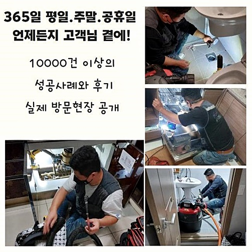
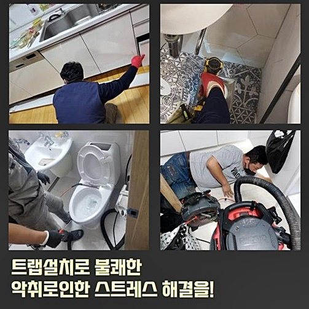
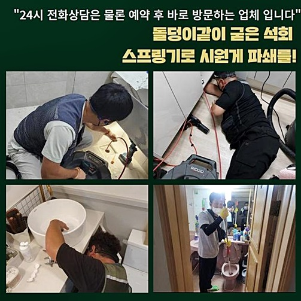
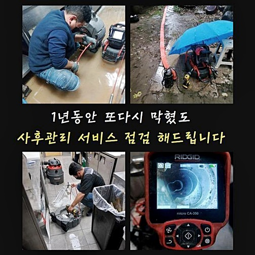
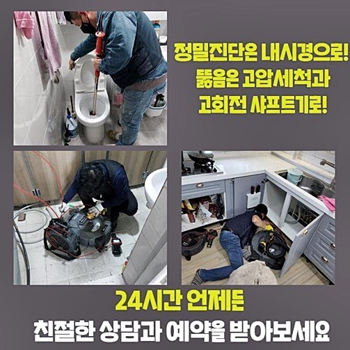
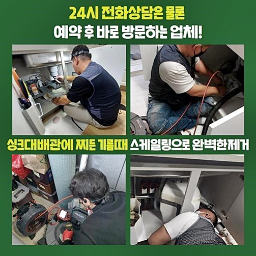

🏠 종로 숭인동싱크대뚫음 누하동 하수구뚫는곳 설비
용인시 처인구 배관막힘 전문 시공 후기

📋 작업 개요
- 위치: 용인시 처인구, 수원시 영통구, 화성시 동탄
- 서비스 유형: 배관막힘, 누수수리, 고압세척, 내시경점검
- 작업 일시:
- 업체명: 하수구수사대 (010-5615-2118)
🔍 문제 상황
종로 숭인동싱크대뚫음 누하동 하수구뚫는곳 설비
밤 늦은 시간의 고객님의 말씀이 있었더라도 더 지체하지 않고 빠르게 개선을 해드리겠다는 마음을 갖고 업무에 들어갑니다
또한 든든한 준비가 동반되기 때문에 개별 환경에 적합한 방법으로 오류를 다잡아 드렸는데요
긴급한 요청 덕분에 제대로 조정할 수 있었으며 작업 완료 직후에 시설물을 쓸 수 있었어요
오늘 상태는 중대한 수준의 거꾸로 넘치는 상황까지는 벌어지지 않았지만 보일러시설의 고장으로인해 막대한 문제까지도 촉발될 수 있었던 조건에 처해 있던 곳이었습니다
오류를 감지한 직후에 의뢰를 맡겼고 잘 처리되어 구사일생이라고 하셨는데 방치 기간이 길어졌다면 추가적 지출이 생길 수 있었습니다
미미한 점이라도 재빠르게 바로잡아 주어야만 더 큰 규모의 공사를 억제할 수 있는 방책이 됩니다
물길이 막힌 듯 하다고 말씀하셔서 얼른 체크해보고 사태를 진정시켜드린 시공 장소였어요!
다른 문제점들이 생겨버리기 전에 기민하고 퀄리티높게 고칠 수 있도록 여러번 중간점검을 거치면서 하수구를 세척해 드리고 있네요!
늦은시간인데도 불구하고 의뢰를 맡겨주신 게 감사하기에 설비 전문업체로서 언제 어디라고 하더라도 충실한 지원을 해드리는것은 당연한 처사라고 여겨요
문제를 점검한 후 속도감있는 대처를 제공해 드리며 다용도의 장치를 가졌기에 통행의 문제가 생겨도 원만하게 개선해 드릴 수 있습니다
간과하고 놔둔다면 문제는 일단 덮인 듯 보여도 더 오래 유지된다면 개선하기 힘든 일로 악화될 수 있어요

🔎 원인 분석
💡 전문가 진단: 정밀 진단 장비를 사용하여 슬러지의 고착 여부를 판명하고 타격/세척 작업을 실시했습니다.
막힌 사유는 다양하기에 물을 받아서 부어버리면 길이 트이진 않을까 싶더라도 사실상 불가능에 가깝습니다
좁은 하수관을 내려가는 내시경을 사용해 핵심적인 데미지를 검토하고 그에 맞춘 처리법을 찾아내서 능률적으로 하수 문제를 처리해 드리고 있어요
게다가 다채로운 체험 내역을 토대로 꼼꼼한 검사와 원만한 조치를 취하여 뛰어난 개선 결과를 드립니다
막혔던 하수가 내려가면 내시경장치를 깊숙히 넣어서 배관 속의 현황을 확인하는 게 필요했습니다
카메라는 좁다란 배수로의 내밀한 쪽까지 찍어주는 카메라와 조명시설이 동반된 형태입니다
촬영을 하면서 내부 노폐물의 유형이나 오류가 생겨버린 구간을 명확하게 판단내리게 되는데요
석회화된 덩어리나 모발이 한몸처럼 조성되어서 구석구석을 닦아냈습니다!
의뢰주신 분도 저희와 함께 모니터링을 거치면서 관로의 실황을 체험하시게끔 해드렸는데 이렇게 더러운 찌꺼기들이 다량 나올 줄 몰랐었다합니다
내부로 내시경을 들여보내서 실시간으로 분석하여 치밀하게 세척에 임하지 않으면 재차 같은 문제가 생겨요
하수관 속의 막힘은 오래두면 마치 돌덩이처럼 경화되기에 수습하기가 더욱 난해해질 수 있습니다
고객님 선에서 하는 조치로는 명확한 경로의 복원을 보실 확률은 희박하기에 전적인 세척 작업을 신청하는 게 적절해요
이번 케이스의 장소는 주거 상업이 모인 건물로 시간의 흔적이 남은 외관과 다양한 가구가 한곳에 뭉쳐있는 공동건물이었죠

🔧 작업 과정
이와 같은 빌딩은 하수구의 자주 그리고 많이 쓰이니 하수구에 대한 트러블이 나타날 가망성이 높아요
하수가 원만하게 폐기되지 않고 집적되면 배관 내면에서 손상부가 만들어질 수도 있으므로 유념할 포인트입니다!
상황전반을 파악하고 적합한 해법이 들어가게 된다면 건물에 심한 데미지가 나타나는 양상을 앞서 저지할 수 있는 겁니다
막힘이 오래 간다면 하수구가 다쳐서 누수 사건까지 발생돼서 이를 빌미로 건물의 물리적 상태에 나쁜 반응을 주어 복잡한 시공으로 발전하고 맙니다
약간의 노폐물만 머물러 있더라도 처치되지 않고 남아있으면 딱딱하게 말라붙어서 세척작업을 오래해야 하는 상황으로 치달을 수 있기에 빠른 조치가 생명입니다
내시경 화면으로 오염인자가 감지가 된다면 갈고리가 이물질을 긁어내는 샤프트로 말끔하게 세정하는 방향이 필요하다고 할 수 있어요
내시경을 깊숙이 넣어서 세정한 내부 구조를 두루 관측해 보고 추가 잔여물이 없게 만드는 단계가 들어가야 합니다
미처리된 부분이 보이면 깔끔하게 정돈해 줘서 또다시 막힘이 유발되는 상황이 일어나지 않게 합니다
배수로의 정화작업에 들어서면 중간점검을 이어가면서 스캔하며 배관 벽면을 청결하게 유지하는 작업이 필요한 겁니다
이번 작업에 쓴 샤프트장치는 내부 폐기물의 세척에 관련하여 기능이 탁월한 기계에요
기계의 끝에 있는 체인이 원활하게 움직이며 벽에 단단히 붙어버린 방해요소를 삭제시킵니다
보편적인 경우를 보자면 물을 쓰면서 불순물들이 흔하게 파이프로 진입된다면 여러 시간이 흐를수록 잔여량은 절대적으로 확장됩니다
막힘이 오래유지된다면 상당한 인력 투입과 지출이 필요한 상황으로 전락합니다
파이프는 소모품이라 세월이 가면갈수록 통로가 얇아지기 때문에 하수구 통로의 봉쇄를 낳을 지도 모릅니다
파이프가 오래될수록 찐득한 기름때도 다량 형성되어 물의 흐름 속도를 저해할 수 있는데다가 사세를 점차 확장해 나가다가 가뜩이나 약한 배관의 손상을 부추겨요
따라서 정기적인 점검과 하수관 세정절차도 필수인데 시설물이 부실해 지지 않게끔 신규 배관에 비해서 훨씬 예민하게 관리해줘야 해요
실내에 있는 하수구에서 내부에서 오래 부패되어 온 찌꺼기가 역행할 때도 있으니 위생적인 관점에서도 내부 세척을 정기적으로 해주는 세심함이 필요해요!
만일 기다란 관로를 따라 결함이 생겨버렸다면 고압세척의 물줄기의 힘으로 손상되지 않는 선에서 정리하는게 명쾌한 방식입니다
다급한 마음에 셀프처리하기 보다는 막힘의 초기단계부터 전문가의 힘을 빌려서 배관 속의 막힌상황을 진단하고 조건에 알맞은 대책을 취하는 꼼꼼함을 필두로 해야합니다
배관 관련 지식들이 결핍되었다면 과격하게 작업을 밀고나가지 말고 전문가가 출동하기 전까지 가만히 보존하시는 편이 나아요


✅ 작업 완료
괜히 손상부를 자극시킨다면 물이 새거나 크랙이 생기는 등 많은 시공비용이 투자되어야 하는 시공이 일어나야 하는 상황으로 부담을 가중시키게 됩니다
세부적인 원인 분석과 미관과 기능의 원상복구로 하수구를 수리해 드리며 작은 흠이라도 없는지 체크한 후에 마감합니다
항상 혁신적 장비가 있으므로서 고객님의 부족한 측면을 얼른 보완해 드리고자 각고의 노력을 기울입니다
촬영 장비까지도 모두 보유하고 있기 때문에 어떤 조건일지라도 복원해 드릴 수 있어요!
물이 고여만가는 난감한 상황이 감지된다면 망설임 없이 간단한 절차의 접수만 거쳐주시면 다년간의 스킬을 발휘해서 하수시설을 정비해 드리겠습니다!



⚠️ 하수구 배관 막힘 예방 및 관리 가이드
- ✅ 머리카락, 비닐, 물티슈 등 물에 분해되지 않는 이물질은 절대 흘려보내지 마세요.
- ✅ 기름기 많은 식기는 설거지 전 키친타올로 먼저 기름때를 닦아내세요.
- ✅ 주기적으로 배수구에 뜨거운 물을 가득 부어주어 유지방 고착을 방지하세요.
- ✅ 작업 후 1년 이내 재발 시 무상 A/S 보증 서비스를 제공합니다.
💡 핵심 정리
- 확실한 장비 작업(내시경 점검 및 샤프트 스케일링)으로 원인을 뿌리 뽑습니다.
- 작업 후 1년 이내에 동일한 부위 재발 시 100% 무상 A/S 서비스를 보장합니다.
- 서울 · 경기 · 인천 전 지역에 24시간 언제든 긴급 출동할 수 있도록 항시 대기 중입니다.
❓ 자주 묻는 질문 (FAQ)
🚨 용인시 처인구 배관막힘 문제로 고민이신가요?
정확한 원인 진단과 확실한 시공으로 재발 없는 해결을 약속드립니다.
24시간 긴급 출동 | 서울 · 경기 · 인천 전지역 | 1년 내 재발 시 무상 A/S